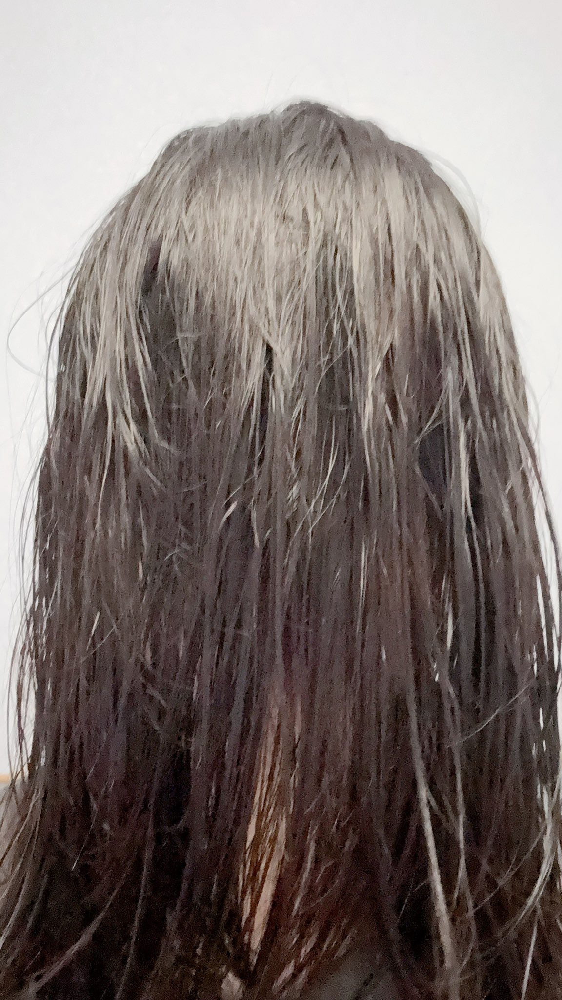

たたなこ🏳️⚧️🍥
@tatanakots
今天洗了头，头发香香的~
然后发现了一件事情
或许男生认为的女生的体香，是洗发水与护发素共同作用在头发上散发出来的味道（当然，别的女生可能还混合一些其他化妆品的气味，但是我因为只用没什么味道的乳液和防晒霜，所以应该没有其他化妆品的气味）
长发与空气接触的面积比较大，有利于气味分子进入空气被男生闻到
而男生由于不使用护发素，问女生的时候女生大概可能也只会以为这是洗发水的味道，导致男生不管用什么洗发水都闻不到这样的气味
所以洗完澡头发香香的真舒服~🥰
（扮演贞子中…）（才…才不是在闻自己头发的气味呢~哼~）
